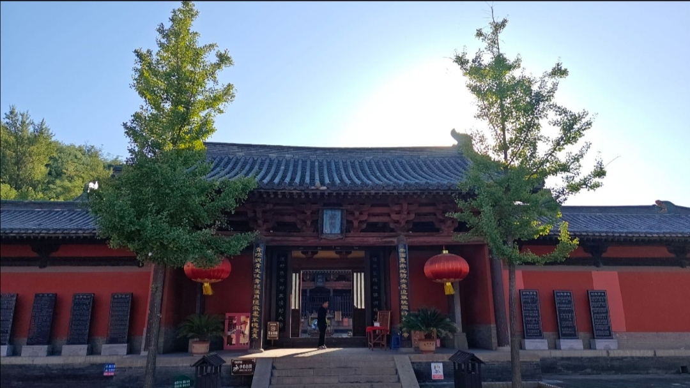
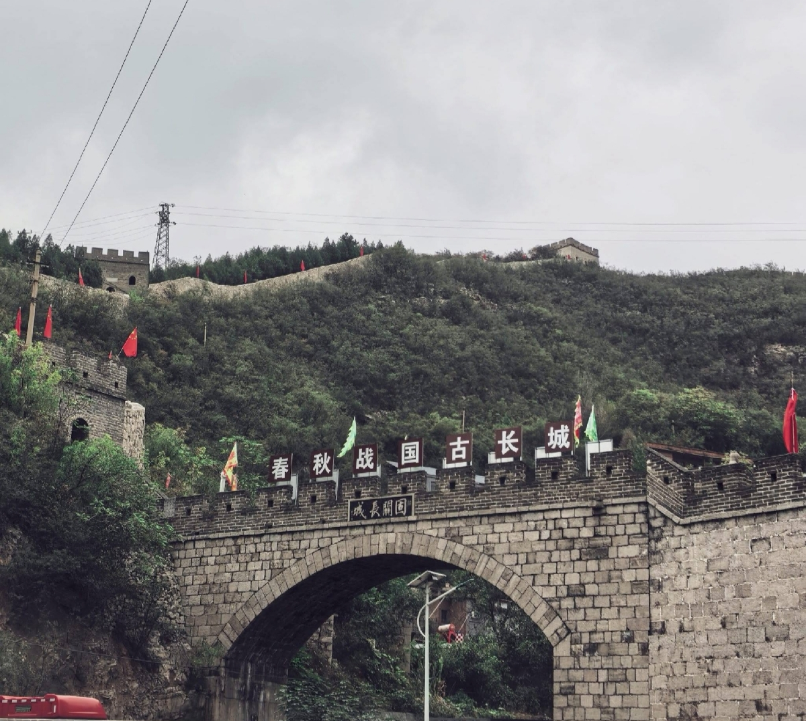
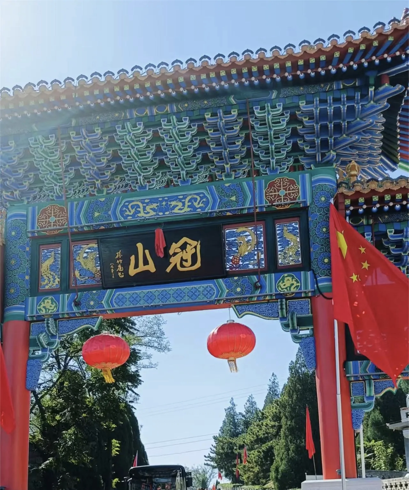
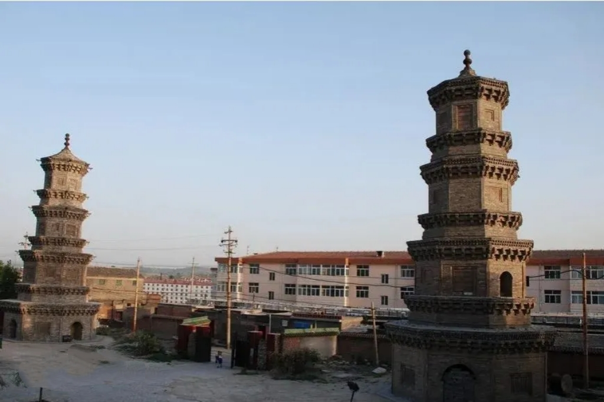
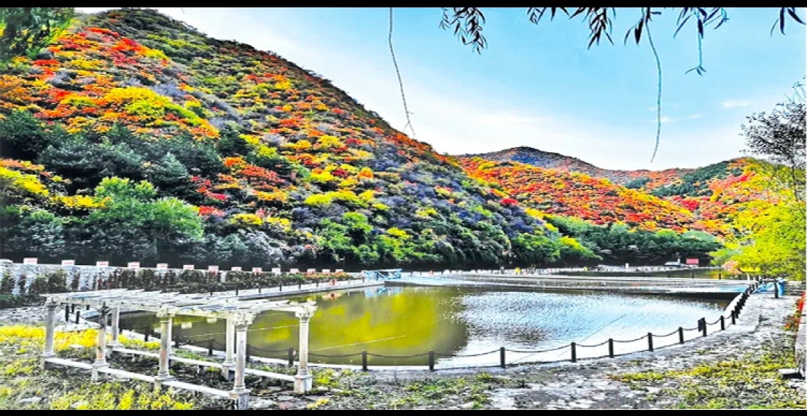
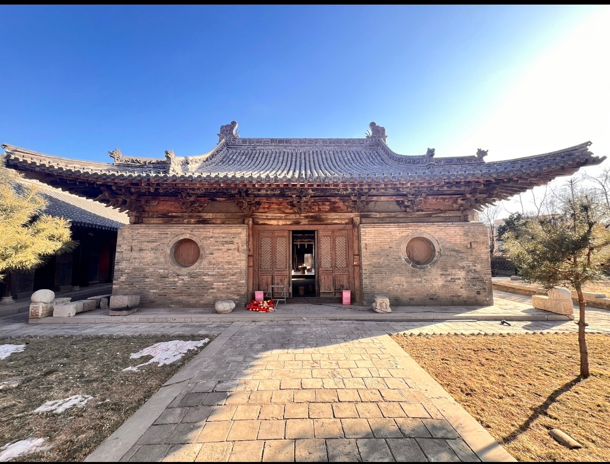
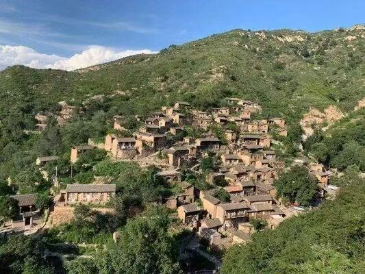

城区
郊区
平定县
盂县
阳泉市
城区
百团大战纪念馆
A级景区
国保单位
红色教育基地，纪念百团大战光辉历史，爱国主义教育重要场所。
门票：免费
附近景点：南山公园、阳泉记忆1947文化园
阳泉记忆·1947文化园
A级景区
由老厂房改造的城市记忆园区，工业遗产与文旅融合新地标。
门票：免费
附近景点：百团大战纪念馆
郊区

关王庙
国保单位
宋代古建筑，全国现存最早的关羽祀典木结构建筑之一。
门票：免费
附近景点：小河古村、大阳泉古村
平定县
娘子关
A级景区
万里长城著名关隘，太行山中段重要关口，素有“天下第九关”之称。
门票：85元
附近景点：固关长城、娘子关瀑布

固关长城
A级景区
国保单位
国内现存少有的完整石砌长城，被誉为“小八达岭”。
门票：40元
附近景点：娘子关、翠枫山

冠山
A级景区
晋东文化名山，元代冠山书院为山西现存完整古书院之一。
门票：30元
附近景点：天宁寺双塔、马齿岩寺

冠山天宁寺双塔
国保单位
宋代砖塔，建筑工艺精湛，地宫出土大量珍贵文物。
门票：免费
附近景点：冠山、平定古城

翠枫山
A级景区
天然森林氧吧，秋季红叶景观十分壮观。
门票：40元
附近景点：固关长城、娘子关
红岩岭
A级景区
丹霞地貌与溶洞风光，自然风光雄奇险峻。
门票：60元
附近景点：大汖古村
盂县
藏山
A级景区
国保单位
因“赵氏孤儿”传说闻名，忠义文化名山，晋东第一名山。
门票：80元
附近景点：大王庙、府君庙、坡头泰山庙

大王庙
国保单位
金至明古建筑，保存完整，历史与艺术价值极高。
门票：免费
附近景点：藏山、府君庙

大汖古村
A级景区
太行山深处古村落，建筑奇特，被誉为“太行山深处的布达拉宫”。
门票：免费
附近景点：红岩岭、滹沱河原生态景区
↑